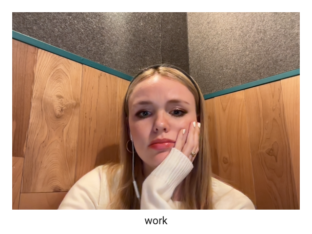
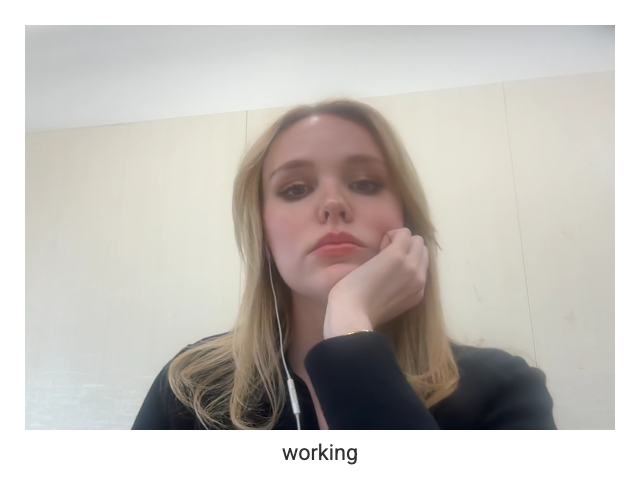
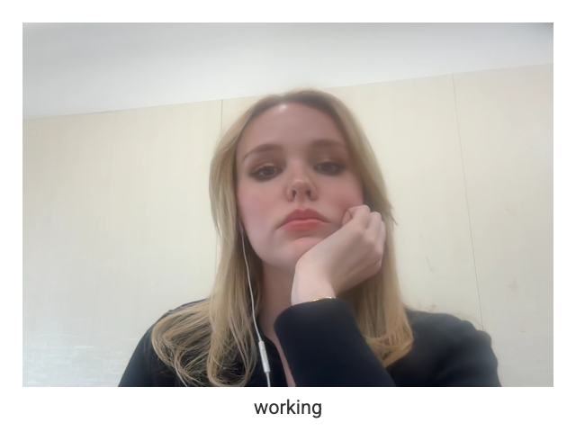

As of late, I primarily use the internet for work. Even before starting my job in marketing for a startup, I was already fairly chronically online, so I can’t attribute my internet use solely to work. However, since starting this job, I’ve definitely noticed a significant increase in my screen time. The platform I use most for work is TikTok, as it’s my leading source of inspiration. I’m constantly scrolling to find the next trend or to get new ideas for how I can market the app.
 

In these three screenshots, I’m catching up on work. In the first one, I’m in a WeWork phone booth reviewing last month’s video stats before joining a Zoom call. In the second, I’m at the airport watching a video submission someone sent me. And in the last one, I’m responding to emails from people interested in creating content with the company.
Regarding my hopes for the internet in the future, I hope it becomes a more uplifting and empowering space for women in particular. Growing up, I remember encountering websites that were hateful and negative toward young women, often spreading rhetoric that was deeply harmful to self-image — similar to the celebrity gossip magazines you’d see at the grocery store. I would love to see that kind of content more restricted, so fewer kids grow up feeling insecure about their appearance just because a website told them they don’t look good or that they don’t fit the so-called “beauty standard.”